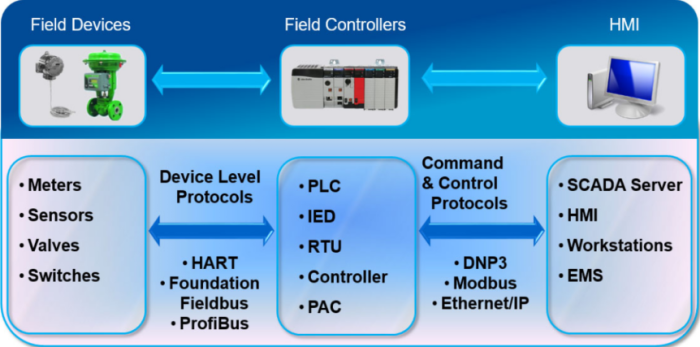
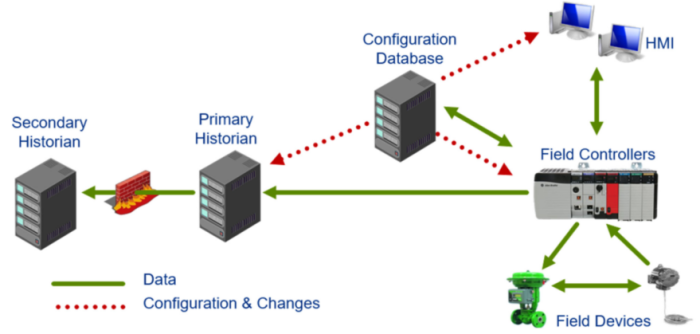

ICS components
Types of Industrial Control Systems• SCADA (Supervisory Control and Data Acquisition)
• DCS (Distributed Control System), PCS (Process Control System)
• EMS (Energy Management System)
• AS (Automation System), SIS (Safety Instrumented System)
• Any other automated control system.
Embedded SystemsEmbedded System is a computer system consisting of hardware and software, typically designed for a specific purpose or dedicated task.
"embedded" because they are part of other systems or devices
They are not a workstation nor a laptop nor a server
Basic Component of a ICS
•
Field Devices are any device that collect data: Meters, Sensors, Valves, Switches
◇
Device Level Protocols are sued to transfer the data collected from the Field Devices to the Field Controllers
•
Field Controllers are used to process the data (they are the brain)
◇
Command & Control Protocols are sued to transfer the data processed from the Field Controllers to the HMI
•
HMI are Human-Machine Interface
•
Configuration Database typically stores information for setting up and configuring the various components in the ICS.
From this Configuration Database station, the information is transferred to the respective devices on the network so they are configured properly.
•
Primary Historian collects real‐time data in the protected ICS zone and replicates the data to the
Secondary Historian, which resides on a separate network segmented by a firewall